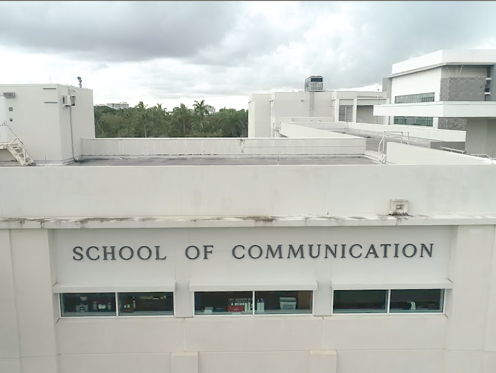
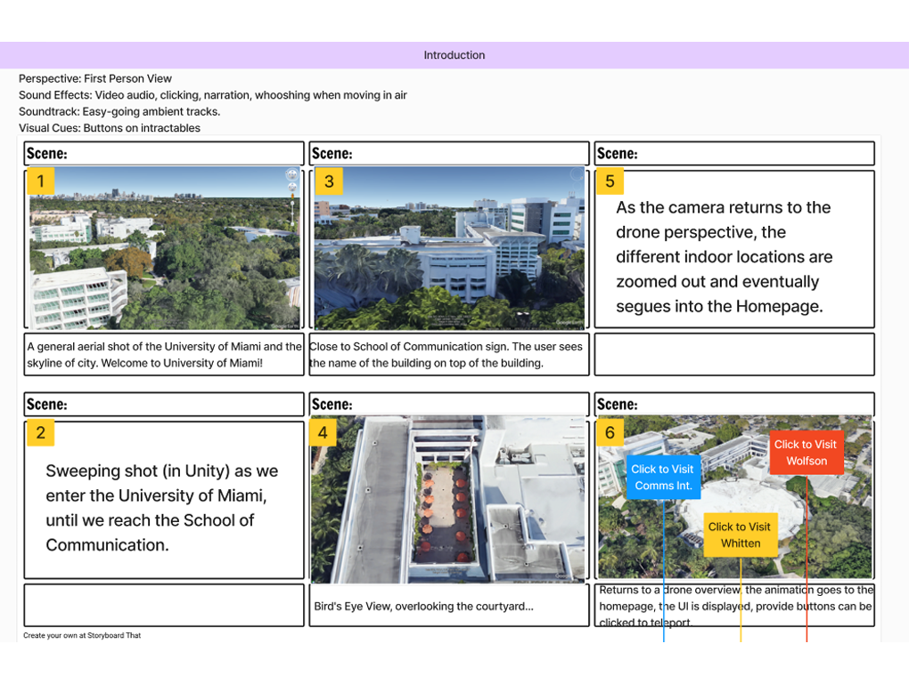
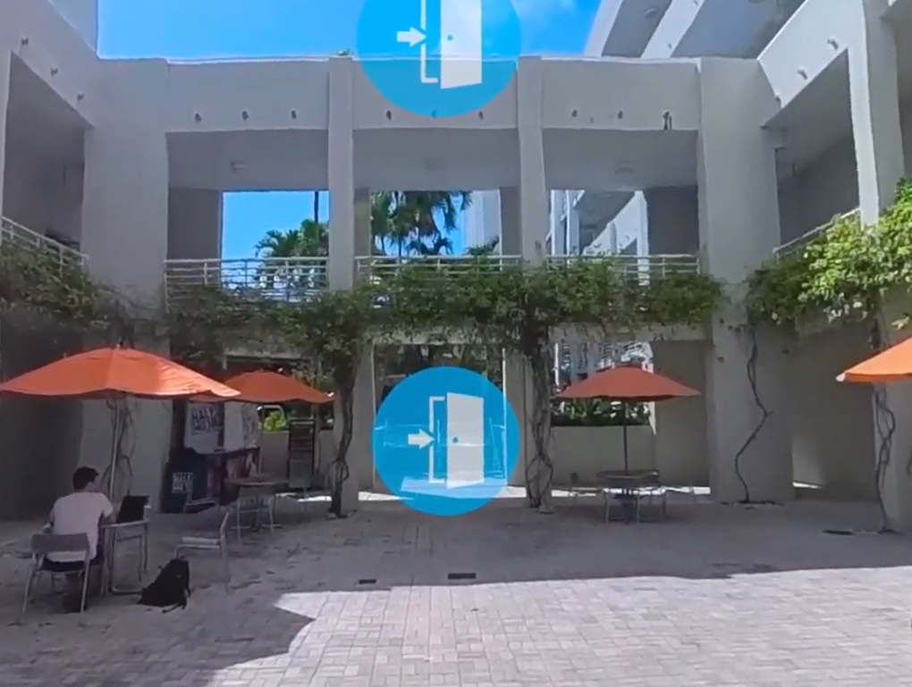

Case Study: "A Cane's Look at the School of Communication"
Type: Collaborative Development & Design | Duration: 3 Months
Product: Virtual Reality Showcase
As I entered the latter half of my B.S.C. studies, I started looking for opportunities to apply my skills in a more practical setting. In Fall of 2024, I enrolled in an Immersive Storytelling course where I had the opportunity to ideate, design, and develop for virtual reality. As part of my coursework, I collaborated with a four-person team to create an expansive VR experience that would utilize virtual reality to immerse users in the School of Communication and its various facets. I served an informal role as the team lead, coordinating our efforts and ensuring that we met our project milestones on time while also providing feedback on our design and development processes, as well as providing assistance with Unity development in coordination with the primary coder on our team.

The exterior of the School of Communication, as captured from some of our drone footage.
During the initial ideation phase of the project, we were tasked with ensuring that there was both an engaging user experience as well as a narrative or otherwise meaningful context for the virtual reality experience. This involved an extensive period of ideation where I collaborated closely with my team to brainstorm and refine our concepts. As all of us were then students under the School of Communication, we imagined our experience as an in-depth exploration of the school the school itself in VR--something that could be used to guide prospective students through its various offerings before they even set foot on campus.
Much of the inspiration for this project came from our own experiences as students within the School of Communication. We wanted to create a virtual reality experience that not only showcased the school's facilities and programs but also conveyed the unique atmosphere and culture of the school. It was also an opportunity to improve the onboarding process for new students, as typically they have to navigate the campus and its resources on their own though either in-person tours that would have to be scheduled or through the School of Communication website which at the time was very text-heavy and not particularly engaging. A freely-available virtual reality experience could provide a more immersive and engaging way for prospective students to explore the school and its offerings, especially as VR technology continues to advance and become more accessible.
The project's main goal would be to serve as an immersive tour of the School of Communication, allowing users to explore its facilities. The narrative component would come from a narrator character (voiced by one of our team members), framed as a soon-to-be graduating student at the school guiding the user through the school while occassionally providing insights and anecdotes about his experiences.

Storyboarding for the final version of the virtual reality experience.
During this project, we had initially imagined the experience to be mostly constructed within Unity, with potentially a 3D recreation of the School of Communication's itself as well as the surrounding city of Miami, with some secondary video content recorded on location through both traditional filming and drone footage (the latter of which was cleared with the Office of Risk Management and UMPD prior to any filming). However, as we progressed through the development process, we repeatedly ran into technical limitations and performance issues--most notably that the headset we were using, the Meta Quest 2, lagged to the point of being unresponsive at times and otherwise too nauseating to use for extended periods due to stuttering. It was determined that this was, for the most part, due to the heavy performance demands of the 3D environment. As the project lead, I had to make the difficult decision to pivot our approach and focus on creating a more streamlined experience that would still effectively convey our narrative without overwhelming the user.
The pivot involved shifting our focus from a fully immersive 3D environment to a more guided experience that utilized the already existing materials we had gathered, most notably the various videos we had captured of the School of Communication and its surroundings. Instead of relying solely on real-time 3D rendering, we expanded the scope of the video component to the entire experience, renting out a 360-degree camera and shooting on-location across all of the desired locales we were to cover.

A shot from the first area of the tour, in the school's plaza.
The decision to pivot our approach was not made lightly. It required extensive discussions with my team and a thorough analysis of our progress and the technical limitations we were facing during playtesting. Ultimately, it enabled the project to evolve into a more feasible and engaging experience that still met our original goals within the material and time constraints we had.
Despite the difficulties in the project's development, the final product was received well by both the faculty and students who participated in the playtesting sessions as well as during final presentations. This project would later be showcased at the 2025 Miami XR event to similar acclaim. While there are certainly areas for improvement, namely the composition of a few shots as well as the variation in weather across shots (which was largely out of our control), the project itself was a valuable learning experience that pushed the boundaries of what we thought was possible within the constraints we faced and, in the end, came together to create a memorable and engaging virtual reality experience.
Two presentation slides were created during the development of this project to help pitch our ideas and showcase our progress to both our classmates and faculty, which also provide links to the various resources we utilized as well as our design process. These slides can be viewed below:
Some of the original shared documents and resources can be referenced in the links below: